Unterstützung
29 Einheiten · Untergruppen: Tross & Versorgung, Pioniere & Stellungsbau, Sanität, Schutzfahrzeuge. Jede Karte zeigt das Aussehen im Spiel, die Kosten, Stärken und Schwächen, alle Werte und einen Tipp. Das Symbol neben dem Namen ist die Klasse – ihr Name erscheint beim Darüberfahren.
Inhalt – alle Einheiten dieser Seite
Antike (6)
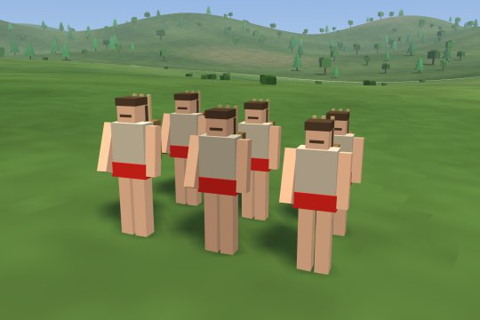
Trossknecht Antike · 200 v. Chr.
Bataillon: 20 Mann · 30 Punkte/Goldje Einheit: 1,5Calones – Sklaven und Knechte im Tross der antiken Heere – schleppten Gepäck, Wasser und Geschosse.
Holt Pfeile, Speere und Schleudersteine aus dem Munitionslager und bringt sie den Schützen. Kämpft kaum.
- Trägt Munition vom Lager zu den Schützen – die müssen dann nicht selbst zurück
- Kaum Rüstung: Pfeile und Kugeln treffen voll
- Wacklige Moral – flieht schnell, wenn es schlecht läuft
- Bogenschützen und Artillerie, bevor es zum Nahkampf kommt
- Reiterei in Flanke und Rücken
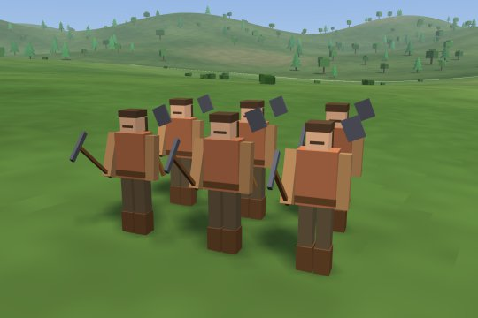
 Mineure (Antike) Antike · 396 v. Chr.
Mineure (Antike) Antike · 396 v. Chr.
Bataillon: 30 Mann · 180 Punkte/Goldje Einheit: 6
Die Römer sollen 396 v. Chr. die Stadt Veji durch einen unterirdischen Gang (cuniculus) eingenommen haben; Mineure untergruben auch Mauern, die dann einstürzten.
Graben Tunnel (Rechts ziehen) und untergraben feindliche Mauern (Rechtsklick darauf). Langsam.
- Gräbt Tunnel (Stufe 1 von 5) hinter die feindliche Linie und untergräbt Mauern und Türme
- Langsam (3,2 m/s)
- Wacklige Moral – flieht schnell, wenn es schlecht läuft
- Bogenschützen und Artillerie, bevor es zum Nahkampf kommt
- Reiterei in Flanke und Rücken

Lagerbauer (Marschlager) Antike · 100 v. Chr.
Bataillon: 40 Mann · 280 Punkte/Goldje Einheit: 7
Römische Legionen bauten jeden Abend ein befestigtes Lager mit Graben und Wall – die Pioniere wussten, wie man in kurzer Zeit eine Stellung errichtet.
Setzen Palisaden und Pfähle – vor der eigenen Linie oder entlang einer gezogenen Linie.
- Baut: Palisade bauen, Pfähle setzen
- keine auffällige Schwäche
- Bogenschützen und Artillerie, bevor es zum Nahkampf kommt
- Reiterei in Flanke und Rücken
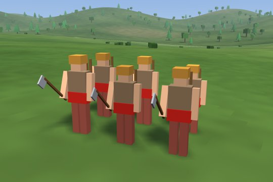
Römische Pioniere Antike · 50 n. Chr.
Bataillon: 40 Mann · 280 Punkte/Goldje Einheit: 7
Die Fabri der Legion bauten Lager, Brücken und Belagerungswerke – Schanzen gehörte zum Soldatenalltag.
Fällen Bäume in der Nähe, setzen Pfähle gegen Reiter und errichten Palisaden. Schwach im Kampf.
- Baut: Pfähle setzen, Palisade bauen
- Langsam (3,3 m/s)
- Bogenschützen und Artillerie, bevor es zum Nahkampf kommt
- Reiterei in Flanke und Rücken
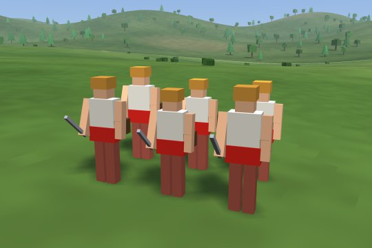
Medicus Antike · 100 n. Chr.
Bataillon: 10 Mann · 120 Punkte/Goldje Einheit: 12Die römische Armee hatte als erste ein geordnetes Sanitätswesen: Capsarii verbanden Verwundete im Feld.
Heilt Verwundete in der Nähe, solange sie nicht im Nahkampf stehen. Begrenzter Verbandsvorrat.
- Heilt Verwundete: 1 Lebenspunkte je Sekunde bei bis zu 3 Soldaten gleichzeitig
- keine auffällige Schwäche
- Bogenschützen und Artillerie, bevor es zum Nahkampf kommt
- Reiterei in Flanke und Rücken
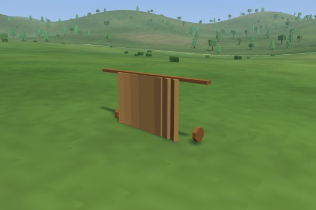
Pluteus (Römischer Schutzschild) Antike · 52 v. Chr.
Bataillon: 2 Fahrzeuge · 200 Punkte/Goldje Fahrzeug: 100Ein fahrbarer, gebogener Schutzschild aus Flechtwerk oder Brettern. Caesar beschreibt solche „plutei“ bei Belagerungen: Dahinter rückten die Legionäre an Mauern heran.
Fährt voraus und fängt Pfeile ab. Wer direkt dahinter geht, ist kaum zu treffen.
- Fahrbare Deckung: wer dicht dahinter folgt, ist vor Beschuss von vorn geschützt
- Kämpft selbst nicht – braucht Schutz
- schnelle Reiterei, die die Bedienung überrennt; Gegenbatterie
Hochmittelalter (5)
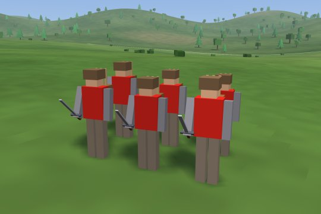
Knappe Hochmittelalter · 1250
Bataillon: 20 Mann · 60 Punkte/Goldje Einheit: 3Junge Adelige in der Ausbildung zum Ritter: Sie trugen Waffen, führten Pferde und versorgten die Schützen.
Bringt den Schützen neue Pfeile und Bolzen. Wehrt sich mit dem Kurzschwert.
- Trägt Munition vom Lager zu den Schützen – die müssen dann nicht selbst zurück
- Schnell (4,2 m/s)
- Wacklige Moral – flieht schnell, wenn es schlecht läuft
- Bogenschützen und Artillerie, bevor es zum Nahkampf kommt
- Reiterei in Flanke und Rücken
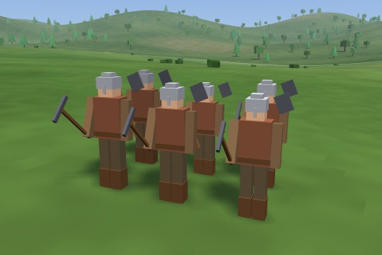
Mineure (Mittelalter) Hochmittelalter · 1200
Bataillon: 30 Mann · 240 Punkte/Goldje Einheit: 8
Mittelalterliche Belagerer gruben Gänge unter Mauern, stützten sie mit Holz ab und brannten die Stützen weg – die Mauer stürzte ein (so etwa 1215 bei Rochester).
Untergraben Mauern und Türme, graben Tunnel hinter die feindliche Linie.
- Gräbt Tunnel (Stufe 2 von 5) hinter die feindliche Linie und untergräbt Mauern und Türme
- Langsam (3,2 m/s)
- Bogenschützen und Artillerie, bevor es zum Nahkampf kommt
- Reiterei in Flanke und Rücken

Schanzbauern Hochmittelalter · 1300
Bataillon: 40 Mann · 140 Punkte/Goldje Einheit: 3,5
Im Mittelalter mussten Bauern beim Heer schanzen: Wälle aufwerfen, Palisaden setzen, Gräben ziehen.
Werfen Erdwälle auf und setzen Palisaden: billige, solide Deckung.
- Baut: Erdwall, Palisade bauen, Pfähle setzen
- Wacklige Moral – flieht schnell, wenn es schlecht läuft
- Bogenschützen und Artillerie, bevor es zum Nahkampf kommt
- Reiterei in Flanke und Rücken

Planwagen (Wagenburg) Hochmittelalter · 1420
Bataillon: 6 Fahrzeuge · 252 Punkte/Goldje Fahrzeug: 42
Die Hussiten stellten ihre Kampfwagen zu Wagenburgen zusammen, an denen 1420–1434 Ritterheer um Ritterheer zerbrach.
Fährt in Stellung und bildet eine Wagenburg: ein Ring aus Wagen, den Schützen besetzen können.
- Baut: Wagenburg bilden
- keine auffällige Schwäche
- schnelle Reiterei, die die Bedienung überrennt; Gegenbatterie

Sturmwand (Mantelet) Hochmittelalter · 1200
Bataillon: 2 Fahrzeuge · 252 Punkte/Goldje Fahrzeug: 126Große Bretterwände auf Rädern, hinter denen Armbrustschützen und Pioniere im Mittelalter an Burgmauern vorrückten.
Höher und fester als ein Pluteus: deckt eine ganze Gruppe gegen Bolzen und Pfeile.
- Fahrbare Deckung: wer dicht dahinter folgt, ist vor Beschuss von vorn geschützt
- Kämpft selbst nicht – braucht Schutz
- schnelle Reiterei, die die Bedienung überrennt; Gegenbatterie
Renaissance (2)

Pulverminierer Renaissance · 1530
Bataillon: 30 Mann · 285 Punkte/Goldje Einheit: 9,5
Ab etwa 1500 füllten Minierer ihre Gänge mit Schwarzpulver – Mauern und Bastionen flogen in die Luft.
Wie die Mineure, aber die Mine explodiert: der Einsturz trifft auch Truppen in der Nähe.
- Gräbt Tunnel (Stufe 3 von 5) hinter die feindliche Linie und untergräbt Mauern und Türme
- Langsam (3,3 m/s)
- Bogenschützen und Artillerie, bevor es zum Nahkampf kommt
- Reiterei in Flanke und Rücken
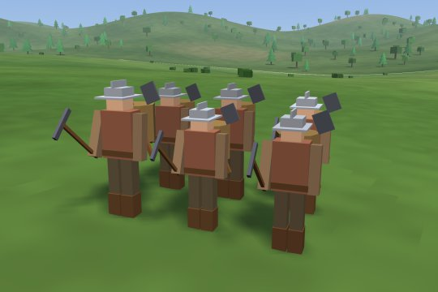
Schanzkorbträger Renaissance · 1550
Bataillon: 40 Mann · 220 Punkte/Goldje Einheit: 5,5
Schanzkörbe (Gabionen) – mit Erde gefüllte Weidenkörbe – deckten ab dem 16. Jh. Geschütze und Belagerer.
Stellen Schanzkörbe und Erdwälle auf: Deckung gegen Kugeln und Kanonen.
- Baut: Schanzkörbe, Erdwall
- Wacklige Moral – flieht schnell, wenn es schlecht läuft
- Bogenschützen und Artillerie, bevor es zum Nahkampf kommt
- Reiterei in Flanke und Rücken
Linienzeit (5)
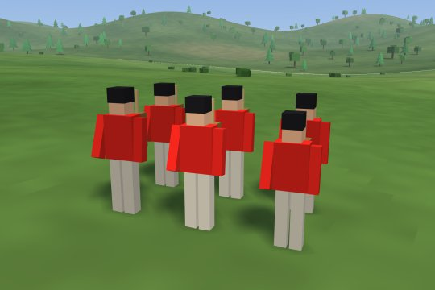
Munitionsträger Linienzeit · 1800
Bataillon: 20 Mann · 60 Punkte/Goldje Einheit: 3Pulverkarren und Patronenträger versorgten die Linie – ohne Nachschub schweigt jede Muskete.
Holt Patronen und Pulver aus dem Munitionslager und verteilt sie an Schützen in der Nähe.
- Trägt Munition vom Lager zu den Schützen – die müssen dann nicht selbst zurück
- Schnell (4,2 m/s)
- Kaum Rüstung: Pfeile und Kugeln treffen voll
- Wacklige Moral – flieht schnell, wenn es schlecht läuft
- Bogenschützen und Artillerie, bevor es zum Nahkampf kommt
- Reiterei in Flanke und Rücken
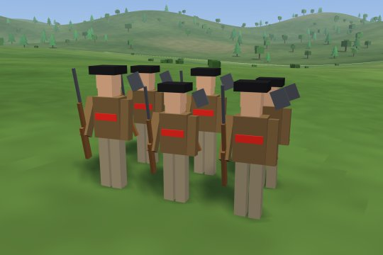
Schanzer Linienzeit · 1700
Bataillon: 30 Mann · 360 Punkte/Goldje Einheit: 12
Pioniere des 18. Jahrhunderts: Sie hoben Laufgräben, Schanzen und Redouten aus – Vauban machte daraus eine Kunst.
Heben Schützengräben aus und bauen Palisaden. Schießen zur Not mit der Muskete.
- Baut: Graben ausheben, Palisade bauen
- Fernkampf bis 80 m (80 Schaden je Treffer)
- Schwach im Nahkampf – vor Reitern und Stoßtruppen schützen
- Wenig Munition (12 Schuss) – Lager oder Träger in der Nähe halten
- Langes Nachladen (9 s)
- Reiterei, Plänkler und Artillerie – im Nahkampf ist die Truppe schwach
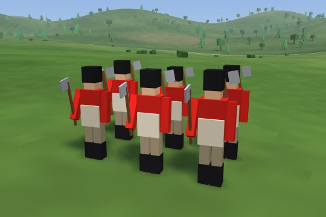
Pioniere Linienzeit · 1800
Bataillon: 40 Mann · 440 Punkte/Goldje Einheit: 11
Sappeure mit Axt, Schaufel und Muskete: Sie schanzten, sprengten und bauten Feldbefestigungen.
Bauen Pfähle und Palisaden vor der Linie. Schießen zur Not selbst.
- Baut: Pfähle setzen, Palisade bauen, Graben ausheben, Erdwall, Schanzkörbe
- Fernkampf bis 80 m (80 Schaden je Treffer)
- Schwach im Nahkampf – vor Reitern und Stoßtruppen schützen
- Wenig Munition (12 Schuss) – Lager oder Träger in der Nähe halten
- Langes Nachladen (9 s)
- Reiterei, Plänkler und Artillerie – im Nahkampf ist die Truppe schwach

Feldlazarett-Wagen Linienzeit · 1797
Bataillon: 2 Fahrzeuge · 112 Punkte/Goldje Fahrzeug: 56Dominique-Jean Larrey schuf 1797 die „fliegenden Ambulanzen“: Wagen, die Verwundete noch im Gefecht versorgten.
Heilt mehrere Verwundete gleichzeitig. Langsam, unbewaffnet – gut schützen!
- Heilt Verwundete: 1,6 Lebenspunkte je Sekunde bei bis zu 6 Soldaten gleichzeitig
- keine auffällige Schwäche
- schnelle Reiterei, die die Bedienung überrennt; Gegenbatterie

Sappenwalze (Rollkorb) Linienzeit · 1750
Bataillon: 2 Fahrzeuge · 300 Punkte/Goldje Fahrzeug: 150Ein großer, mit Reisig oder Erde gefüllter Korb, den Pioniere bei Belagerungen vor sich herrollten – er fing Musketenkugeln ab.
Stoppt Kugeln für die Truppe dahinter. Schwer, aber billig.
- Fahrbare Deckung: wer dicht dahinter folgt, ist vor Beschuss von vorn geschützt
- Gepanzert: einfache Waffen prallen meist ab
- Kämpft selbst nicht – braucht Schutz
- Panzerabwehr, Minen und schwere Geschütze sind gefährlich
- Langsam für ein Fahrzeug (1,8 m/s)
- Panzerfaust, Javelin, Panzerabwehrkanone, Minen, schwere Geschütze
Weltkriege (4)
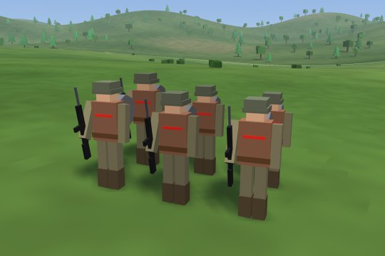
Drahtverhau-Trupp Weltkriege · 1916
Bataillon: 12 Mann · 414 Punkte/Goldje Einheit: 34,5
Pioniere der Westfront 1916: Sie rollten nachts Stacheldraht vor den Gräben aus – Hindernisse, an denen ganze Angriffe scheiterten.
Rollen Stacheldraht aus und heben Gräben. Wenig Kampfkraft.
- Baut: Stacheldraht, Graben ausheben
- Fernkampf bis 150 m (45 Schaden je Treffer)
- Schießt auch auf kurze Entfernung mitten im Gefecht
- Schwach im Nahkampf – vor Reitern und Stoßtruppen schützen
- Reiterei, Plänkler und Artillerie – im Nahkampf ist die Truppe schwach
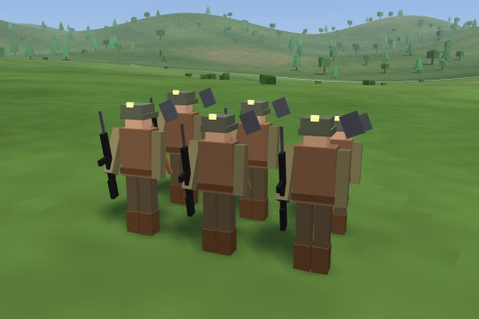
Tunnelbau-Kompanie Weltkriege · 1917
Bataillon: 24 Mann · 768 Punkte/Goldje Einheit: 32
Im Ersten Weltkrieg gruben Tunnelbauer unter die feindlichen Gräben. Bei Messines (Juni 1917) zündeten die Briten 19 große Minen auf einmal.
Schnelle Tunnel und gewaltige Minen unter Gräben und Bunkern.
- Gräbt Tunnel (Stufe 4 von 5) hinter die feindliche Linie und untergräbt Mauern und Türme
- Fernkampf bis 150 m (45 Schaden je Treffer)
- Schießt auch auf kurze Entfernung mitten im Gefecht
- Schwach im Nahkampf – vor Reitern und Stoßtruppen schützen
- Reiterei, Plänkler und Artillerie – im Nahkampf ist die Truppe schwach

Minenleger Weltkriege · 1942
Bataillon: 10 Mann · 385 Punkte/Goldje Einheit: 38,5
Pioniere mit Tellerminen und Minensuchgerät – seit dem Zweiten Weltkrieg sperren Minenfelder ganze Landstriche.
Legen unsichtbare Minenfelder weit vor der Front: Feinde, besonders Fahrzeuge, fliegen in die Luft.
- Baut: Minen legen, Stacheldraht
- Fernkampf bis 250 m (36 Schaden je Treffer)
- Schießt auch auf kurze Entfernung mitten im Gefecht
- Schwach im Nahkampf – vor Reitern und Stoßtruppen schützen
- Reiterei, Plänkler und Artillerie – im Nahkampf ist die Truppe schwach

Rollschild (1915) Weltkriege · 1915
Bataillon: 2 Fahrzeuge · 473 Punkte/Goldje Fahrzeug: 236,5Im Ersten Weltkrieg wurden fahrbare Stahlschilde gebaut, hinter denen Soldaten auf feindliche Gräben vorgehen sollten – ein Versuch, das Niemandsland zu überwinden.
Stahlschild auf Rädern: hält Gewehr- und MG-Kugeln auf. Bringt Infanterie bis an die Gräben.
- Fahrbare Deckung: wer dicht dahinter folgt, ist vor Beschuss von vorn geschützt
- Gepanzert: einfache Waffen prallen meist ab
- Sehr zäh: 1.700 Lebenspunkte
- Kämpft selbst nicht – braucht Schutz
- Panzerabwehr, Minen und schwere Geschütze sind gefährlich
- Panzerfaust, Javelin, Panzerabwehrkanone, Minen, schwere Geschütze
Kalter Krieg (1)
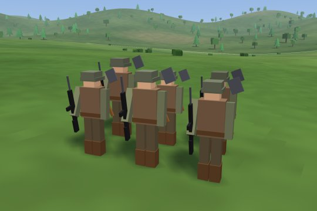
Bunkerbautrupp Kalter Krieg · 1960
Bataillon: 16 Mann · 640 Punkte/Goldje Einheit: 40
Pioniere des Kalten Krieges: vorgefertigte Betonteile, Gräben und Drahtsperren.
Stellen Betonwände, heben Gräben aus und rollen Draht aus.
- Baut: Betonwände, Graben ausheben, Stacheldraht
- Fernkampf bis 300 m (36 Schaden je Treffer)
- Schießt auch auf kurze Entfernung mitten im Gefecht
- Schwach im Nahkampf – vor Reitern und Stoßtruppen schützen
- Reiterei, Plänkler und Artillerie – im Nahkampf ist die Truppe schwach
Gegenwart (3)
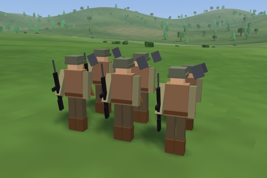
Stellungspioniere (T-Wände) Gegenwart · 2005
Bataillon: 12 Mann · 846 Punkte/Goldje Einheit: 70,5
Moderne Pioniere setzen mit Kränen Betonelemente („T-Walls“) auf – Schutzwände, die ganze Stützpunkte gegen Beschuss abschirmen.
Stellen Betonwände direkt vor die eigene Linie (Deckung vor die Linie), legen Minen und Draht.
- Baut: Betonwände, Minen legen, Stacheldraht
- Fernkampf bis 400 m (38 Schaden je Treffer)
- Schnell (4,4 m/s)
- Schießt auch auf kurze Entfernung mitten im Gefecht
- Teuer – Verluste schmerzen
- Reiterei in die Flanke, Plänkler und Artillerie auf Distanz

Sanitäter Gegenwart · 2000
Bataillon: 8 Mann · 440 Punkte/Goldje Einheit: 55Moderne Sanitätssoldaten mit Verbandszeug, Tragen und Notfallausrüstung.
Versorgt Verwundete in der Nähe. Trägt nur eine Pistole.
- Heilt Verwundete: 2 Lebenspunkte je Sekunde bei bis zu 3 Soldaten gleichzeitig
- Fernkampf bis 50 m (26 Schaden je Treffer)
- Schnell (4,2 m/s)
- Schießt auch auf kurze Entfernung mitten im Gefecht
- Schwach im Nahkampf – vor Reitern und Stoßtruppen schützen
- Reiterei, Plänkler und Artillerie – im Nahkampf ist die Truppe schwach
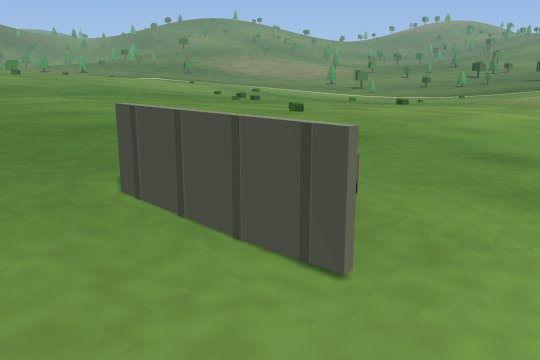
Schutzwandfahrzeug Gegenwart · 2005
Bataillon: 2 Fahrzeuge · 1.602 Punkte/Goldje Fahrzeug: 801Gepanzerter Lastwagen mit aufgestellter Panzerwand – gedacht, um Truppen auf offenem Gelände Deckung zu geben (Konzept angelehnt an moderne geschützte Fahrzeuge).
Sehr dicke Wand: deckt eine ganze Kompanie. Fährt auf den Feind zu und hält 9 m davor.
- Fahrbare Deckung: wer dicht dahinter folgt, ist vor Beschuss von vorn geschützt
- Schwere Panzerung: Pfeile, Schwerter und Gewehrkugeln richten fast nichts aus
- Sehr zäh: 4.200 Lebenspunkte
- Eiserne Moral – flieht spät und sammelt sich schnell
- Trampelt Fußvolk einfach nieder
- Kämpft selbst nicht – braucht Schutz
- Panzerabwehr, Minen und schwere Geschütze sind gefährlich
- Teuer – Verluste schmerzen
- Panzerfaust, Javelin, Panzerabwehrkanone, Minen, schwere Geschütze
Zukunft (3)

Tunnelbohr-Trupp (Zukunft) Zukunft · 2130
Bataillon: 12 Mann · 264 Punkte/Goldje Einheit: 22
Ein Zukunftsgerät: eine Bohrmaschine, die in Minuten Gänge unter Schlachtfelder treibt.
Sehr schnelle Tunnel; untergräbt selbst Bunker in kurzer Zeit.
- Gräbt Tunnel (Stufe 5 von 5) hinter die feindliche Linie und untergräbt Mauern und Türme
- Fernkampf bis 300 m (52 Schaden je Treffer)
- Sehr zäh: 165 Lebenspunkte
- Schnell (4,2 m/s)
- Schießt auch auf kurze Entfernung mitten im Gefecht
- keine auffällige Schwäche
- Reiterei in die Flanke, Plänkler und Artillerie auf Distanz

Schildbau-Drohnen Zukunft · 2140
Bataillon: 6 Fahrzeuge · 255 Punkte/Goldje Fahrzeug: 42,5
Schwebende Drohnen der Zukunft, die Energiebarrieren projizieren.
Errichten in Sekunden Energiebarrieren vor der eigenen Linie.
- Baut: Energiebarriere
- Gepanzert: einfache Waffen prallen meist ab
- Eiserne Moral – flieht spät und sammelt sich schnell
- Schwebt über dem Boden
- Kämpft selbst nicht – braucht Schutz
- Panzerabwehr, Minen und schwere Geschütze sind gefährlich
- Panzerfaust, Javelin, Panzerabwehrkanone, Minen, schwere Geschütze
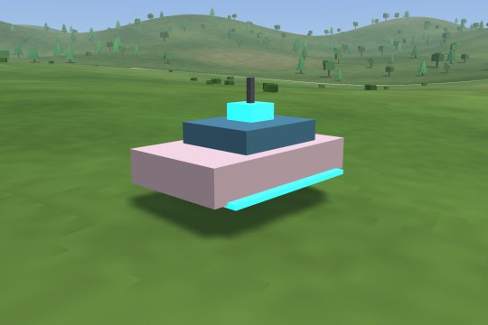
Kuppelwagen (Energiekuppel) Zukunft · 2150
Bataillon: 1 Fahrzeuge · 1.496 Punkte/Goldje Fahrzeug: 1.496Ein Schwebefahrzeug der Zukunft, das eine blaue Energiekuppel von rund 20 m Durchmesser aufspannt.
Unter der Kuppel: kein Schaden hinein und keiner hinaus. Ideal, um eine Truppe sicher heranzubringen.
- Spannt eine Energiekuppel von etwa 20 m Durchmesser auf: kein Schaden hinein und keiner hinaus
- Gepanzert: einfache Waffen prallen meist ab
- Sehr zäh: 2.400 Lebenspunkte
- Eiserne Moral – flieht spät und sammelt sich schnell
- Schwebt über dem Boden
- Kämpft selbst nicht – braucht Schutz
- Panzerabwehr, Minen und schwere Geschütze sind gefährlich
- Teuer – Verluste schmerzen
- Panzerfaust, Javelin, Panzerabwehrkanone, Minen, schwere Geschütze